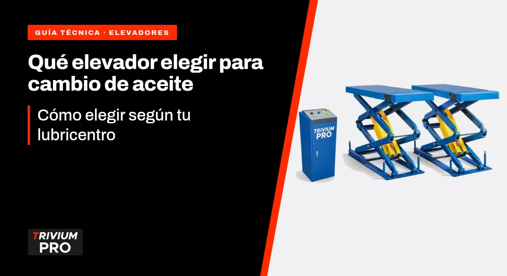

Elegir el elevador adecuado para realizar cambios de aceite es una decisión crucial que va a afectar la eficiencia, seguridad y rentabilidad de tu taller mecánico o lubricentro. En este artículo, vamos a analizar las opciones más populares y sus ventajas para ayudarte a tomar la mejor decisión.
Elevadores de Dos Columnas
Los elevadores de dos columnas son quizás los más versátiles del mercado. Con capacidades que generalmente van desde 3 hasta 5 toneladas, son ideales para talleres que realizan múltiples tipos de trabajo.
Ventajas para cambio de aceite:
- Acceso completo debajo del vehículo
- Te permite trabajar en múltiples servicios además del cambio de aceite
- Excelente visibilidad del área de trabajo
- El mecánico puede trabajar de pie cómodamente
Consideraciones:
- Requieren altura de techo mínima de 3.5 a 4 metros
- Ocupan espacio lateral para las columnas
Elevadores de Cuatro Columnas
Estos elevadores son extremadamente estables y seguros.
Ventajas para cambio de aceite:
- Muy fáciles y rápidos de operar
- Mayor estabilidad para vehículos pesados
- Menor mantenimiento que otros tipos
Consideraciones:
- El acceso lateral está limitado por las rampas
- Pueden requerir un puente o plataforma auxiliar para acceder a ciertas partes del vehículo
Elevadores de Tijera o Pantógrafo
Los elevadores tijera son una excelente opción para talleres con espacio limitado o techos bajos. Se instalan a nivel del piso y levantan el vehículo desde abajo.
Ventajas para cambio de aceite:
- Perfectos para talleres con techo bajo
- No ocupan espacio lateral
- Acceso total al chasis y cárter
- Ideales para centros de cambio rápido de aceite
Consideraciones:
- Algunos requieren una fosa o instalación empotrada en el piso
- La capacidad de elevación suele ser menor
- Pueden ser más lentos que otros tipos
Elevadores Móviles o Portátiles
Una opción cada vez más popular son los elevadores móviles de baja altura, especialmente útiles para talleres pequeños o móviles.
Ventajas para cambio de aceite:
- No requieren instalación permanente
- Podés moverlos donde los necesites
- Inversión inicial más baja
- Ideales para trabajo en distintas bahías
Consideraciones:
- Capacidad de carga limitada
- Menos estables para trabajos prolongados
- Altura de elevación menor
¿Cuál Elegir?
La elección del elevador ideal va a depender de varios factores específicos de tu taller:
Elegí un elevador de dos columnas si:
- Realizás trabajos variados además de cambio de aceite
- Tenés altura de techo suficiente
- Buscás versatilidad a largo plazo
Elegí un elevador de cuatro columnas si:
- Te enfocás principalmente en servicios rápidos
- Trabajás con vehículos pesados o SUVs
- Querés máxima estabilidad y seguridad
Elegí un elevador de tijera si:
- Tu taller tiene techo bajo
- Te especializás en cambios rápidos de aceite y servicios express
- Buscás optimizar el espacio
Elegí un elevador móvil si:
- Tenés un taller pequeño
- Necesitás flexibilidad
- Estás arrancando y querés una inversión menor
Conclusión
No hay una respuesta única para todos los talleres. Lo más importante es evaluar el espacio disponible, el tipo de servicios que ofrecés, tu presupuesto y tus planes de crecimiento. Un elevador de dos columnas suele ser la opción más versátil para la mayoría de los talleres, pero si te especializás en cambios rápidos de aceite, un elevador de tijera o cuatro columnas puede ser más conveniente.
Recordá también considerar aspectos como la garantía, el servicio técnico disponible en tu zona y la reputación del fabricante. Una buena inversión en un elevador de calidad va a durar muchos años y te va a dar seguridad tanto para vos como para tus clientes.